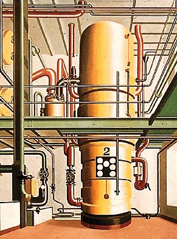

Wie
**waren die Bücher in seine Kartons gekommen?

Seit einer
**Woche
**war Werner ständig in seinem Zimmer gewesen. Es gab somit keine Möglichkeit, die Bücher noch bei ihm zu plazieren, nachdem er aus der Villa des Onkels ausziehen mußte. Die Person, die ein Interesse hatte, ihn verdächtig zu machen, hatte demnach schon vorher vom Tod des Onkels gewußt, ihn also vermutlich auch eigenhändig herbeigeführt.
Bis hierher sah er also klar.
Die Wirkung des Tees nahm rapide ab, die der offenen Fragen verstärkte sich:
Aber
**wer außer Werner hatte ein Motiv? Leider
**wollte ihm hierzu einfach nichts einfallen.
Werner bemerkte, daß solche Überlegungen im Moment nichtweiterführen würden und so telefonierte er nach einer Pizza. Dann schlürfte er zum
Kühlschrank ,
um feierlich ein Gläschen Sekt zu trinken. Schließlich mußte Werner ja trotz der neuen Probleme über den Lauf der Dinge sehr zufrieden sein.
Nachdem der Stapel von leeren Pizzakartonsweiter gewachsen
**war und sich Werners Magen wieder zufriedener anfühlte, reute es ihn sogar schon fast, die Broschüre seiner Bank mitverbrannt zu haben. Er schaltete den Fernseher ein und schaute im Videotext nach den Aktienkursen. Auch
**wenn ihm die wirren Zahlen nicht allzu viel sagten, freute er sich wie ein kleines Kind, hier investieren zu dürfen, sobald er die Firma des Onkels zu Geld gemacht haben würde. Sein Leben könnte in Zukunft nur noch aus Studieren und Lesen bestehen, ohne daß irgendwelche finanzielle Probleme dadurch auftreten würden.